Практичні курси · журнал «ДентАрт» 2021 №1
Стоматологічні зонди
DENTAL PROBES
Стоматологічний зонд – один із базових інструментів робочого набору кожного лікаря-стоматолога. Найбільш поширене його застосування разом із дзеркалом на стоматологічному прийомі для різних діагностичних цілей. Це інструмент, робоча частина якого зроблена у вигляді тонкого стрижня і ручки, найчастіше виготовлений з неіржавіючої сталі.
У медицині існує близько сотні різновидів зондів, які застосовуються для діагностичних та лікувальних процедур у різних порожнинах і каналах тіла людини. Так, у ротовій порожнині введення тонкого конічного зонда (бужа) у протоку слинної залози не тільки дозволяє провести забір слини для кількісного і якісного її дослідження, а й розширює саму протоку для проведення сіалографії. Застосовується цей інструмент і для лікування стриктур (звужень) протоки слинних залоз та відновлення цілісності протоки.
Цікаво, що перше застосування зондів у стоматології було саме з лікувальною метою. Розсвердлювати уражені ділянки зубів уперше почали в епоху неоліту. Найдавніші зубні свердла, знайдені археологами при розкопках, датуються VII тисячоліттям до н. е. Підтвердженням стоматологічного призначення цих інструментів є знайдені людські зуби того часу зі слідами впливу «древніх стоматологів» – прикрасами із вкрапленнями золота й нефриту. Індіанці цивілізації Майя для створення заглиблення в зубі виготовляли своєрідний зонд з нефриту або міді і за допомогою примітивного лучкового дриля змушували його обертатися. Ріжучою частиною зонда при цьому служив дрібно потовчений порошок кварцу.
Сучасні стоматологи в основному застосовують зонди для діагностичних маніпуляцій. Залежно від загостреності розрізняють зонди загострені (експлорери) і притуплені. До останніх належать пародонтальні зонди, конічні зонди для бужування проток слинних залоз і дослідження свищів.
За формою робочої частини розрізняють такі види гострого зонда:
- багнетоподібний (прямий) – використовується для дослідження емалі на предмет каріозних порожнин у легкодоступних місцях, зондування входу в кореневий канал;
- вигнутий (кутовий) – потрібний для визначення устя кореневого каналу, діагностики глибини і характеру каріозних порожнин, виявлення назубних відкладень (найбільш ходовий в арсеналі інструментів стоматологів);
- серповидний – зручний для діагностики і зондування кореневих каналів, фуркацій коренів (фото 1).
Експлорери можуть бути односторонніми (один робочий кінець для виявлення карієсу або назубних відкладень), двосторонніми непарними (два робочих кінці, що відрізняються), двосторонніми парними (два робочих кінці, які є дзеркальним відображенням один одного) (фото 2). Останні в основному використовуються для дослідження проміжків між молярами.
Гострі зонди виготовляють зі спеціальних сплавів, що мають пам'ять форми. Тому вони тонкі, гнучкі, практично не ламаються, що надзвичайно важливо для клініциста при діагностиці карієсу, дефектів реставрацій, оцінці стану поверхні зубів, в тому числі фісур, виявленні з'єднання каріозної порожнини з порожниною зуба, отриманні інформації про болісність і характер розм'якшення зубних тканин, уточненні топографії усть кореневих каналів, а також локалізації назубних відкладень.
Для пацієнтів з імплантатами потрібно використовувати спеціальні пародонтальні зонди з пластиковою робочою частиною. Особливі пластикові зонди з кольоровим кодуванням кінчика (білим, зеленим, синім) дозволяють точніше визначати чотири фенотипи ясен (фото 3, 4).
Головним інструментом для оцінки стану пародонта або з метою скринінгу, або для оцінки змін пародонта протягом усього процесу лікування є пародонтальний зонд (зонд з тупим робочим кінчиком). Він так само, як і експлорер, може бути одностороннім і двостороннім. Набули поширення і так звані універсальні зонди, у яких одна робоча частина – це експлорер, а друга – пародонтальний зонд (фото 5). Односторонніми зондами можна перкутувати зуби, визначати їх рухливість.
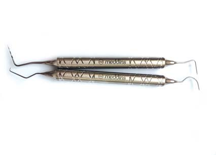
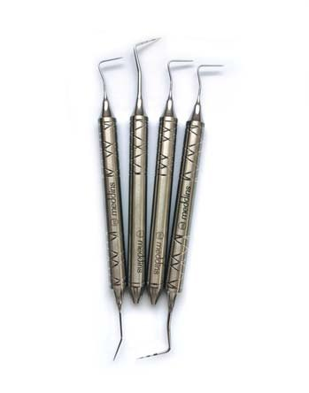
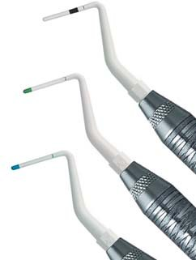
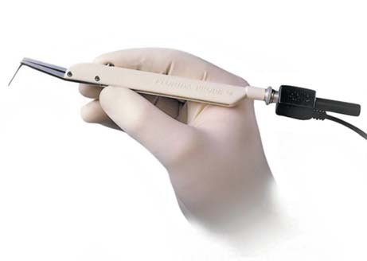
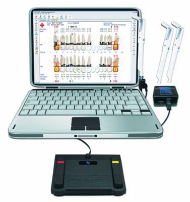
Випускається понад 40 різних типів пародонтальних зондів. Кожен фахівець надає перевагу зонду з певним типом кодування, що найбільше відповідає стилю його роботи. Умовно сучасні пародонтальні зонди поділяють на 5 груп:
- прості мануальні;
- мануальні зонди зі стандартизованою силою зондування;
- автоматизовані зонди зі стандартизованою силою зондування;
- зонди, що вимірюють 2 показники пародонтальної кишені;
- зонди, що вимірюють 3 показники пародонтальної кишені.
За допомогою пародонтальних зондів робиться:
- оцінка стану тканин ясен (визначають щільність ясен, наявність кровоточивості, положення ясен щодо зуба);
- вимірювання глибини пародонтальних кишень (вводиться зонд між зубом і яснами уздовж поверхні кореня зуба в 6 точках по периметру кожного зуба, показником глибини є максимальне значення);
- оцінка ступеня рецесії ясен (вимірювання виконуються від лінії переходу емалі в цемент кореня до краю ясен);
- визначення величини втрати епітеліального прикріплення ясен (за наявності рецесії ясен підсумовується її показник з показником глибини пародонтальної кишені; при гіпертрофії ясен від величини показника глибини пародонтальних кишень віднімається показник величини набряклості або розростання ясен);
- аналіз ступеня ураження фуркації (спеціальний вигнутий зонд Набера визначає ураження фуркації в горизонтальному і вертикальному напрямках);
- вимірювання глибини переддвер'я ротової порожнини (відстань від краю ясен до дна переддвер'я);
- діагностика вертикальних тріщин коренів зубів.
Головна особливість мануальних пародонтальних зондів – наявність маркування на робочій частині. Деякі з них мають колірне кодування, виконане за допомогою методики Qulix, яка дозволяє надати сталі чорного відтінку, що запобігає злущуванню і вицвітанню кодування. Дуже важливо, щоб градуювання зонда добре читалося. Ряд пародонтальних зондів мають на кінчику кульку діаметром 0,5-0,6 мм.
При використанні пародонтальних зондів рекомендоване зусилля 0,20-0,25 Н (приблизно 25 Г/с²). Для перевірки існує лабораторна шкала, або силу можна визначити, зондуючи нігтьове ложе у себе. Однак дослідження свідчать, що на практиці у більшості випадків зусилля мануального зондування перевищує рекомендоване (аж до 130 Г),6 що призводить до суттєвих помилок у вимірюваннях, а також до травмування пародонта і кровотечі.4 Цікаві дані наводять Al Shayeb і співавт., згідно з якими при вивченні 100 пародонтальних зондів однієї партії виявилося, що крок нанесених відміток відрізнявся приблизно на 0,5 мм при їх калібруванні, а діаметр кульки варіював у межах 0,28-0,7 мм, що є джерелом різних несумісних результатів вимірювання.5
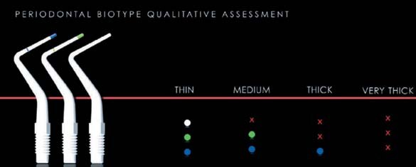
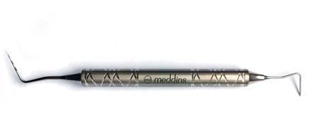
Упровадження комп'ютерних технологій у стоматологію дозволило автоматизувати і об'єктивізувати діагностику стану тканин пародонта.2 Відсутність дискомфорту і больових відчуттів у пацієнтів, звуковий супровід процесу діагностики, скорочення його тривалості, візуалізація пародонтологічного статусу у вигляді пародонтограми, порівнянність пародонтальних карт у динаміці спостереження при застосуванні електронних зондів є дуже потужним мотиваційним фактором і для пацієнта, і для стоматолога. При використанні автоматизованих комп'ютерних тест-систем, таких як Парометр Pa-оn і Флорида Проуб, вдається нівелювати помилки, що виникають при мануальному внесенні даних вимірювань, і залежність показань вимірювання від умінь і досвіду оператора.8
В апаратно-програмному комплексі Флорида Проуб, розробленому в 1988 р. (США), електронно-вимірювальна система представлена титановим зондом з рухомою муфтою діаметром 0,5 мм, що забезпечує плавність зондування, постійний тиск при зондуванні 20 Г/см² і відтворюваність результатів з точністю до 0,2 мм (фото 6). Дані замірів глибини занурення електронного зонда в ній заносяться в комп'ютер за допомогою педалі ножного перемикача. Ця система, окрім зонда й педалі, включає також комп'ютерне забезпечення, оптичний кодуючий пристрій, комп'ютерний інтерфейс і набір проводів, що з'єднує всі елементи воєдино (фото 7). За допомогою Флорида Проуб записується пародонтограма, в яку вводяться дані наявності зубів, імплантатів, величин глибини пародонтальних кишень, рецесії і гіперплазії ясен, стану зони фуркацій, кровоточивості ясен, наявності гною, ступеня рухливості зубів. Вимірювання електронним зондом здійснюється безпосередньо тільки глибини його занурення в ясенну борозну, ясенну чи пародонтальну кишені. Щоб показник був точним, важливим моментом є правильне розміщення муфти зонда щодо лінії крайових ясен, точна установка на датчику оптимальної сили зондування 20 Г/см². Для отримання інших параметрів пародонтограми потрібний мануальний пародонтальний зонд, але введення їх значень здійснюється за допомогою ножної педалі або клавіатури комп'ютера. Проте порівняльна характеристика зондування з використанням пародонтального зонда і обстеження пацієнтів із захворюваннями пародонта за допомогою комп'ютерної системи Флорида Проуб засвідчили, що результати зондування ґудзикуватим зондом помилкові: поодинокі пародонтальні кишені не виявлялися, або глибина фіксувалася з похибкою до 1,5 мм, що сприяло постановці неправильного діагнозу ступеня тяжкості пародонтиту.1
Інноваційні технології компанії Orange Dental (Німеччина) дозволили у 2012 р. застосувати у практичній діяльності лікарів-стоматологів пародонтальний зонд Рa-on, який став основою автоматизованої діагностики пародонтального статусу Парометр Pa-on (фото 8). Парометр включає, окрім пародонтального зонда з одноразовим стерильним наконечником, док-станцію і шнур її зв'язку з комп'ютером (фото 9). Пристрій має уніфіковане і повністю інтегроване програмне забезпечення «Byzz Paro». Істотною його перевагою є автозбереження результатів обстеження без допомоги асистента.
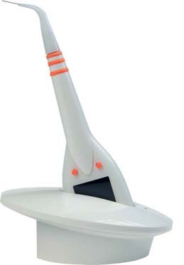
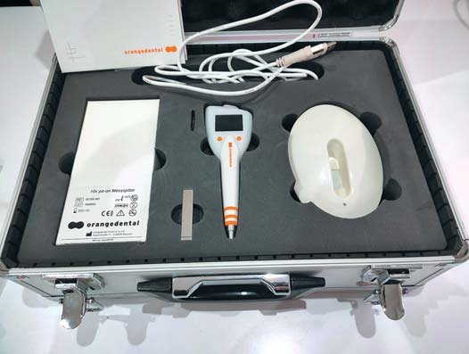
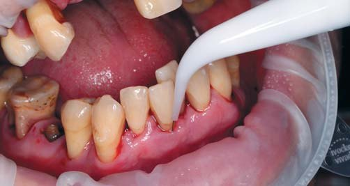
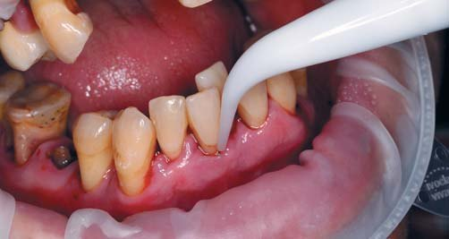
Пародонтограма, побудована за допомогою Парометра Pa-on, включає показники величини втрати епітеліального прикріплення, глибини пародонтальних кишень, ступеня рецесії ясен, ураження фуркації, рухливості зубів, кровоточивості ясен, об'єму нальоту на зубах. Надзвичайно важливо, що перші три зазначені показники (ключові при встановленні клінічного діагнозу) визначаються зондом-тензодатчиком автоматично при безпосередньому його контакті з дном пародонтальної кишені.
Опубліковані порівняльні аспекти застосування мануального пародонтального зонда і Парометра Рa-оn.7
Наш досвід застосування у клінічній практиці з 2014 року Парометра Pa-on дозволяє відзначити низку його переваг.
- Стандартизовано тиск на дно ясенної борозни або пародонтальної кишені – 20 Г.
- Програмне забезпечення Парометра інтегрується із системою управління клінікою Зубна Фея.
- При діагностиці пародонтального статусу не потрібна допомога асистента.
- Висока точність вимірювання втрати епітеліального прикріплення, глибини пародонтальної кишені (за її наявності), величини рецесії ясен. Зонд робить вимірювання автоматично.
- 100% стерильна одноразова насадка для пацієнта. Немає потреби згодом замінювати робочу частину через обмеження кількості циклів автоклавування (зонд Флорида Проуб цього вимагає).
- Тефлонове покриття тензодатчика зонда безпечне для імплантатів.
- Малоінвазивна та безболісна маніпуляція для пацієнта.
- Звуковий супровід показників можливий рідною мовою пацієнта.
- За допомогою програмного забезпечення можна встановити послідовність вимірювань, кількість точок вимірювань на один зуб. Схеми вимірювань можна зберігати для кожного пацієнта окремо.
- Ергономічна і бездротова робота стоматолога.
- Індикація та звукове сповіщення під час вимірювань. Усі дані автоматично реєструються за допомогою програмного забезпечення і візуалізуються.
- Безпосередньо під час вимірювань і побудови пародонтограми система розраховує індекси кровоточивості (ВОР, РВI і SBI), гігієнічний індекс (індекс зубного нальоту АРI) з урахуванням наявності назубних відкладень на всіх поверхнях зуба.
- Можна продемонструвати пацієнтові динаміку змін пародонтологічного статусу у співставленні з попередніми обстеженнями.
- Крім пародонтальної карти, з урахуванням системних факторів ризику у пацієнта, наявності шкідливої звички (кількості викурених за день сигарет), результатів вивчення прозапальних цитокінів у ротовій рідині автоматично будується ще й діаграма факторів ризику і прогнозування розвитку захворювання пародонта.
- Перебуваючи в док-станції, зонд передає дані останніх вимірювань і заряджає акумулятор. Завжди готовий до роботи.
Як приклади об'єктивізації пародонтологічного статусу і його аналізу в динаміці лікування вміщуємо клінічні фото, ортопантомограми, пародонтограми пацієнтів і їхні діаграми чинників ризику розвитку патологічного процесу в тканинах пародонта.
На жаль, на сьогодні опубліковані поодинокі результати наукових досліджень, в яких використовувався Парометр Pa-оn для діагностики пародонтального статусу пацієнтів, але в уже наявних публікаціях повідомляється про високу точність вимірювання за допомогою Pa-оn, ергономічність, простоту в роботі і досить високу швидкість вимірювань, особливо при проведенні масових епідеміологічних досліджень.3
| Показники | Мануальний зонд | Парометр Рa-оn |
|---|---|---|
| Достовірність вимірювань | Залежить від досвіду і мануальних навичок оператора | Майже не залежить від умінь оператора |
| Можливість травматичного пошкодження пародонта | Висока ймовірність | Відсутня |
| Болісність | Виражена | Відсутня |
| Залучення асистента у процес складання пародонтограми | Вимагає | Не вимагає |
| Обмеження щодо глибини занурення зонда у пародонтальну кишеню | Відсутня | До 11 мм |
| Можливість зондування у важкодоступних ділянках (дистальні поверхні молярів) | Можливе | Часто неможливе через розміри самого зонда |
| Можливість зондування вузьких вертикальних кишень | Існує | Існує |
| Гнучкість робочої частини зонда | Ригідний | Гнучкий |
| Відсоток помилок при перенесенні даних | Існує | Немає |
| Можливість автоматичного підрахунку результатів обстеження | Немає | Є |
| Вироблення мотивації у пацієнта | Існує | Збільшує мотивацію, особливо при складанні діаграми чинників ризику |
| Собівартість | Мінімальна, зонд підлягає стерилізації | Для кожного пацієнта потрібна одноразова насадка на зонд |
| Потреба в додатковому устаткуванні | Не вимагає | Потрібен персональний комп'ютер (без доступу до інтернету) і ліцензоване програмне забезпечення |
| Затрати часу на складання пародонтограми | Однакові | Однакові |
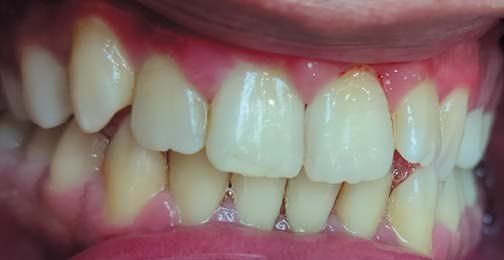
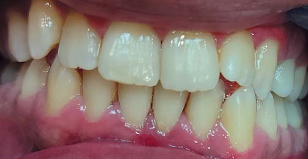
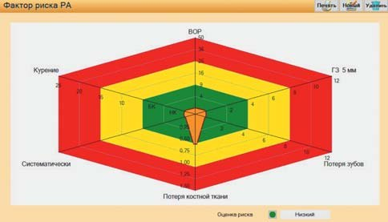
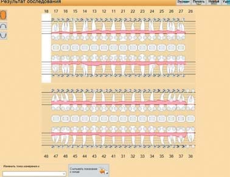
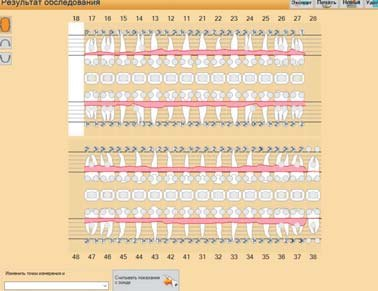
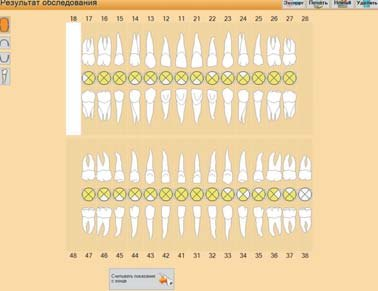
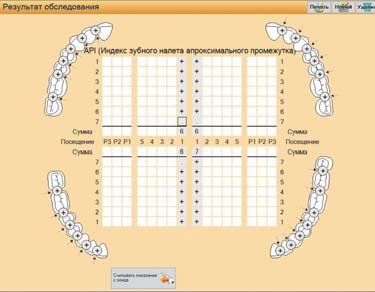
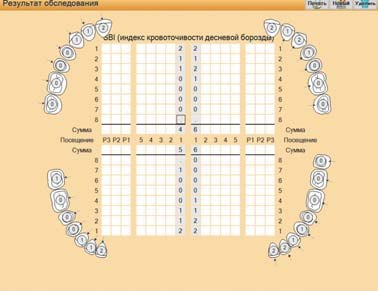
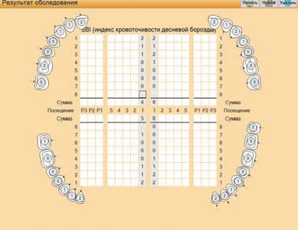
Фото фронтальної ділянки зубних рядів пацієнта А., 21 рік, із записом вимірювань Парометра Pa-on і побудовою діаграми факторів ризику.
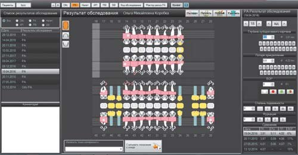
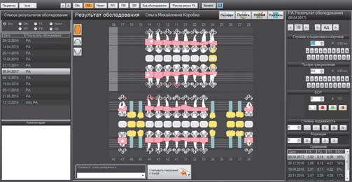
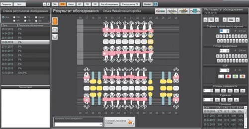
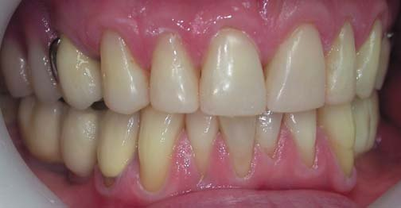
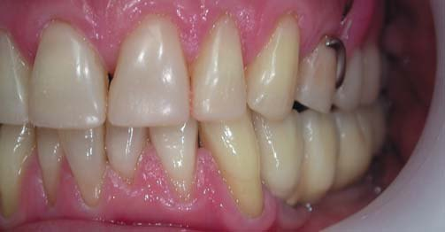
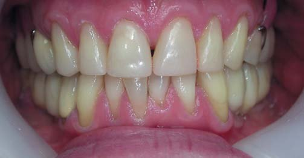
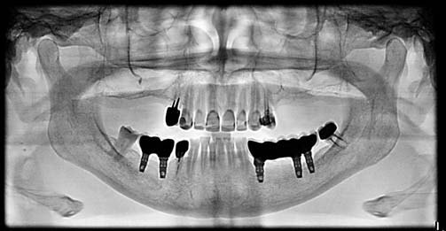
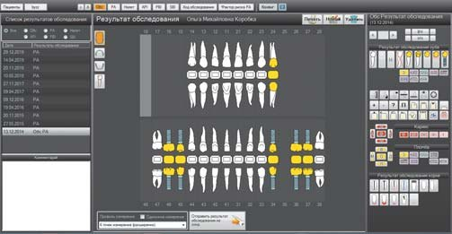
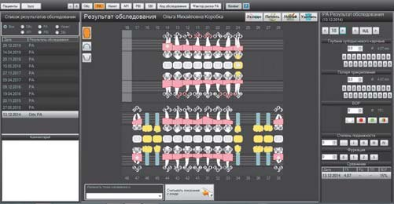
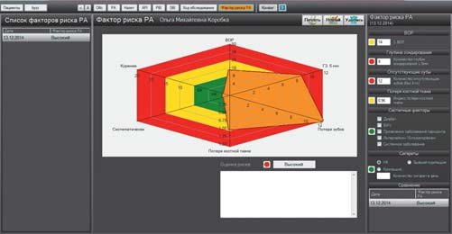
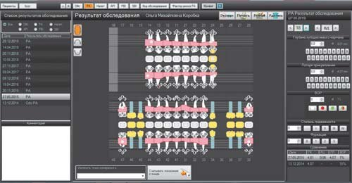
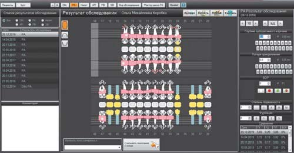
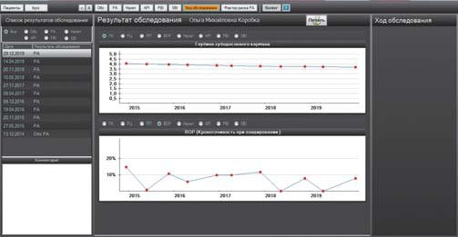
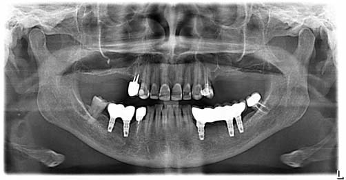
Фото зубних рядів пацієнтки К., 46 років, з діагнозом хронічний генералізований пародонтит другого ступеня тяжкості, у динаміці 6 років з результатами ортопантомографії і запису вимірювань Парометром Pa-on з побудовою графіків змін параметрів і діаграмою факторів ризику розвитку захворювання пародонта (2014 рік – 2019 рік).
Беручи до уваги поширеність хвороб пародонта у всіх країнах, омолодження уражень пародонта, збільшення частоти агресивних форм патології, слід констатувати, що діагностика пародонтального статусу має бути обов'язковим елементом первинного обстеження кожного пацієнта на стоматологічному прийомі. На нинішньому етапі без застосування і експлорерів, і пародонтальних зондів обійтися неможливо. Їх вибір стоматологом дуже індивідуальний. Але знання переваг і недоліків наявних зондів, їх унікальності дозволить зменшити помилки і неточності при зондуванні, домогтися відтворюваності і каліброваності результатів, а відтак підвищить якість діагностики та лікування стоматологічних захворювань.
Література
- Петренко К. А., Капралова Г. А. Эффективность использования компьютерной системы Florida Рrobe в диагностике воспалительных заболеваний пародонта // International Journal of Humanities and Natural Sciences, vol. 5, part 1, 24-29.
- Попович І. Ю., Петрушанко Т. О. Об'єктивізація стану пародонта та ступеня рухомості зубів. Вісник проблем біології і медицини. 2016. Вип. 2, т.1 (128). С. 258-260.
- Ba'rcena Garcia M., Cobo Plana J. M., Arcos Gonza'lez P. I. Prevalence and severity of periodontal disease among Spanish military personnel. BMJ Mil Health. 2020 Mar 5:bmj-military-2020-001419.
- Lang N. P., Adler R., Joss A., Nyman S. Absence of bleeding onprobing. An indicator ofperiodontal stability. J Clin Periodontol. 1990;17:714-21.
- Al Shayeb, Kwthar & Turner, Wendy & Gillam, David. Periodontal Probing: A Review. Primary Dental Journal. 2014.3. 10.1308/205016814812736619.
- Polson A. M., Caton J. G. Currentstatus of bleeding in the diagnosisof periodontal diseases. J Periodontol. 1985;56 (11 Suppl):1-3.
- Renatus A., Trentzsch L., Schönfelder A., Schwarzenberger F., Jentsch H. Evaluation of an Electronic Periodontal Probe Versus a Manual Probe. J Clin Diagn Res. 2016;10(11):ZH03-ZH07.
- Wang S. F., Leknes K. N., Zimmerman G. J., Sigurdsson T. J., Wikesjö U. M., Selvig K. A. Intra- and inter-examinerreproducibility in constant forceprobing. J Clin Periodontol.1995;22:918-22.